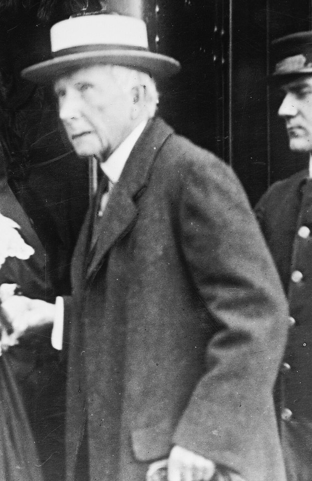

FILE FCP-37 HISTORICAL CASE FILE
Standard Oil and the 1911 antitrust dissolution
ASSESSMENT: Unlawful monopolization was legally established; sweeping present-day lineage claims need separate evidence.
Documented findings, economic interpretation and unresolved claims are assessed separately.

Claim under review
The question is whether Standard Oil used exclusionary practices to monopolize U.S. refining and transport.
The Supreme Court applied the Sherman Act to a combination whose acquisitions, rebates and control of transportation it found unreasonable. The decree ordered dissolution into separate companies; it did not claim that scale, integration or low prices were unlawful in themselves.
Context and timeline
Standard Oil grew through acquisitions, railroad rebates and integration from 1870 onward. The federal government sued under the Sherman Act; the Supreme Court upheld dissolution in 1911, splitting the group into successor firms.
McGee’s reexamination of railroad rebates challenged a prominent part of the historical case and encouraged a more nuanced economic debate. Predatory pricing is only one alleged mechanism; court findings also considered acquisitions, exclusionary arrangements and the system’s structure.
Primary records and formal findings
The Supreme Court opinion and trial record found an unreasonable combination with exclusionary practices; they establish legal monopolization under the period’s law, not every later claim about oil pricing.
Use the full trial record to distinguish practices the Court relied on from later popular retellings. The successor firms’ later histories cannot be treated as proof of continuing coordination without evidence of agreements or shared control.
Independent economic evidence
John McGee reexamined the railroad-rebate evidence and argued some claims were overstated; later historians assess scale economies, integration and competitive effects.
The Supreme Court’s monopolization finding rested on a defined record and legal standard. Later claims about successors require independent evidence of present agreements, control or exclusionary conduct.
Counter-evidence and limitations
The court finding is specific to the record and Sherman Act standard; dissolution does not prove every acquisition was coercive or that modern energy prices are controlled by Standard Oil successors.
Falsifiable checks and assessment
Review acquisition ledgers, railroad contracts, refinery output and local prices; test whether rivals faced discriminatory costs and whether lower costs came from efficiency or exclusion.
Assessment: Unlawful monopolization was legally established; sweeping present-day lineage claims need separate evidence.
Sources and evidentiary notes
- Standard Oil Co. of New Jersey v. United States, 221 U.S. 1 (1911)Supreme Court opinion sets legal findings and remedy. It addresses this episode but cannot alone resolve the broader causal question.
- U.S. v. Standard Oil trial record (1906–11)Primary evidence on contracts and corporate structure. It addresses this episode but cannot alone resolve the broader causal question.
- John S. McGee, “Predatory Price Cutting: The Standard Oil (N.J.) Case,” Journal of Law and Economics (1958)Academic reappraisal challenges some rebate and predation claims. This work tests an economic interpretation; its estimates depend on data and assumptions and do not establish intent.
Historical research only; not investment or legal advice.